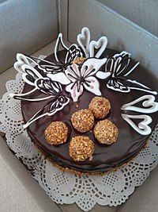
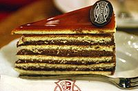
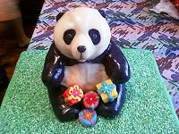
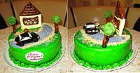

История
Первые торты, видимо, появились в то время, когда люди научились молоть зерно и получать таким образом муку. Собственно торты получили распространение, когда повара стали использовать сахар. Тростниковый сахар, впервые произведённый в Индии, пропутешествовал до арабских стран, где его искусно смешивали со специями и ароматическими приправами, ввозимыми с Дальнего Востока.
Приготовление
Коржи для большинства тортов изготовляются из бисквитного или песочного теста, классические торты представляют собой комбинацию из тонкого песочного коржа (для более стабильного основания) и одного или нескольких бисквитных коржей. Также для тортов иногда используют слоёное тесто или вафельные коржи (см. вафельный торт). Для смазывания коржей обычно используют повидло, крем из сливочного масла или сливок с сахаром, сгущённое молоко. Также между коржами можно уложить слой фруктов, ягод, орехов, смочить коржи небольшим количеством алкоголя (ром, ликёр). Как в тесто, так и в крем можно добавить различные вкусовые и ароматические добавки: порошок какао, ваниль; пищевые красители.
Традиционно торты имеют округлую форму, однако некоторые разновидности, а также торты промышленного производства, выпекаются в прямоугольных формах. Такие торты часто разрезают на кусочки и продают в виде пирожных (к примеру, торт «Наполеон» и одноимённое пирожное). В Италии популярны торты в виде полусферы. В последнее время стали популярны необычные формы тортов, например, в виде звезды или сердца — эти торты чаще всего делают к особым случаям.
Выпечкой и оформлением тортов занимается обученный повар-кондитер.
Оформление тортов
Для декора тортов обычно используют крем (как правило, тот же самый, что используется для прослойки коржей), выдавливая его при помощи кондитерского шприца на верхний слой торта и его боковины.
Также торт покрывают глазурью или ганашем. Широкое распространение получила эластичная сахарная мастика из маршмэллоу, которая применяется не только в качестве покрытия торта, но и для лепки декоративных фигурок для украшения кондитерских изделий.
Благодаря сахарной мастике торт выглядит по-элегантному гладким и выделяется среди других лакомств.
Главное преимущество мастики перед традиционной глазурью — это её пластичность, она легко принимает любую форму и из неё можно вылепить разные фигурки — зверюшек, человечков, цветы. Сегодня кондитеры совмещают использование мастики и помадки, при этом применяя королевскую глазурь для придания мастике необходимой формы.
Состав кондитерской мастики варьируется, но неизменную основу составляют натуральные ингредиенты. Основным компонентом является сахарная пудра к которой может добавляться желатин, крахмал, яичный белок, зефир. Недобросовестные производители могут добавлять в состав: эквивалент масло какао, Е466 (пищевой стабилизатор), Е1422 (модифицированный крахмал), глицерин, E471 (стабилизатор), краситель пищевой, Е202 (сорбат калия).
Существует множество общих мотивов, которые используют при украшении тортов. Самые известные из них — это цветы и декоративный край из сахарной глазури, фигурки из марципана и мастики, помадка, а также разные виды глазури.
В методе Ламбет (от англ. Lambeth) применяется техника сахарного узора. На торт, покрытый помадкой, наносят узор, используя королевскую глазурь. Затем добавляют ещё и другой узор, похожий на кружево. Другие приёмы, используемые в методе Ламбет, включают в себя формирование гребенчатого края торта, нанесение разных завитушек и рисование воздушных узоров из тонких нитей сахарной глазури.
В австралийском методе используется узор из королевской сахарной глазури, нанесённый на другой замысловатый узор, напоминающий кружево.
Достаточно популярным является метод Уилтон (Wilton)[1], в котором для оформления торта используют масляный крем. Обычно кремом покрывают весь торт, или используют его для украшения торта не только разными завитушками и цветочками, но и сложными узорами. Украшение тортов сейчас уже трудно представить без метода Уилтон. Он быстро стал популярным, так как даже новички могут его применять, постепенно совершенствуя своё умение. В методе Уилтон существует три «уровня» мастерства: первый — нанесение цветочного узора и декоративного края, второй — изготовление и нанесение на торт помадки и поярусная техника, третий же «уровень» включает совершенно особые и очень сложные техники и приёмы.
Помимо этого, в качестве украшений для тортов используют фрукты, ягоды, орехи, фигурки из марципана, шоколадную и кокосовую стружку, взбитые сливки.
 
Торт в культуре
Торт является традиционным праздничным блюдом на свадьбах, днях рождения и прочих торжественных событиях. Свадебный торт обычно выполняется в несколько ярусов и украшается сверху фигурками молодожёнов. На день рождения именинный торт могут украшать свечами в количестве, равном возрасту именинника, или специальными свечами с цифровым изображением его возраста.
Торты часто используют в качестве метательного оружия для демонстрации общественного недоверия или презрения к известным людям. Традицию метать в известных лиц тортами основал бельгиец Ноэль Годен — лидер движения «Международные пирожные бригады», от активистов которого пострадали такие люди, как Билл Гейтс, Мишель Камдессю, Жан-Люк Годар и другие[2].
Бессмысленное кидание тортами в качестве развлечения является составной частью ряда кинокомедий. Такое кидание добавляет элемент карнавала в сюжет. Как отмечает М.М. Бахтин, карнавал связан с разрушением иерархии и торжеством праздничного настроения. Так, кидаясь тортами,персонажи фильмов усиливают чувство разгула и веселья.
20 июля в мире отмечается праздник — Международный День Торта[3].
Известные торты
- Devil’s food cake
- «Клубника со сливками»
- «Айершекке»
- «Баттенберг»
- Буччеллато
- «Добош»
- «Дунайские волны»
- «Захер»
- Ишльские тортики
- «Киевский торт»